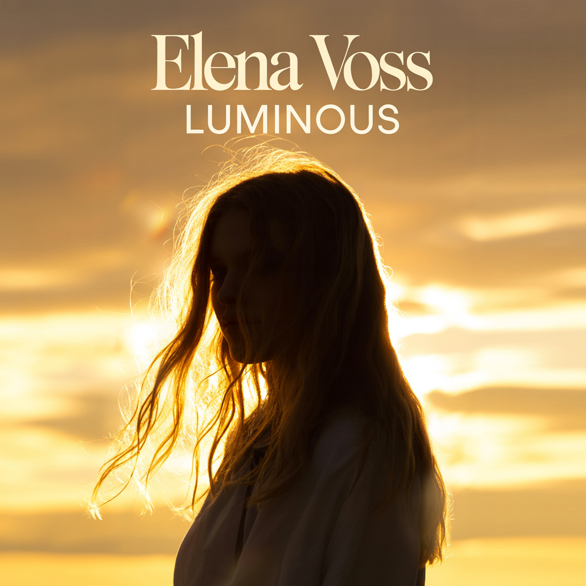

Elena Voss
Ethereal Electronic / Art Pop • 2026 • 10 Tracks • Explicit
View Full LyricsElena Voss emerged from the underground bass scene in Virginia as VEXRA, an anonymous producer and vocalist who refused to show her face. Performing in a custom LED mask and all black, she built a cult following on the strength of her music alone. No face. No name. Just VEXRA. Her production sits at the collision point of emotional pop vocals and skull-rattling trap, bass house, and hardstyle. Think Krewella's raw vulnerability fused with Yellow Claw's aggression, filtered through a cyberpunk lens.
Her debut "Beautiful Damage" (2024) was exactly what the title promised. Raw, aggressive, unapologetically angry. This was a woman making art from her pain, refusing to be polite about it. The underground noticed.
"Phantom Frequency" (2024) went darker and more atmospheric. Trip-hop influences, moody production, haunting beauty. She was learning that power didn't always need to be loud. The mask stayed on, but questions were forming underneath.
By "Skin & Static" (2025), those questions became confrontation. Industrial bass, heavy synths, unflinching sexuality. Elena explored identity, desire, power, and control with zero apologies. This was VEXRA at her most dangerous, and her cult following grew stronger.
Then came "Human" (2025), the turning point. Elena revealed her real name for the first time and made something vulnerable. Melodic dubstep, future bass, emotional depth. This wasn't VEXRA the anonymous warrior. This was Elena Voss admitting she had feelings, admitting she wanted connection. The mask was coming off, metaphorically at least.
"Icon" (2026) was her mainstream takeover. Hyperpop chaos meets dark pop hooks. Meta-commentary on selling out, industry plants, and female ambition. She wanted success and refused to apologize for it. By this point, she'd proven everything. She could produce, she could rage, she could deliver pop perfection.
But "Luminous" (2026) is where she finally exhales. Her first album under her own name, completely separate from VEXRA. No bass drops, no masks, no proving anything. Ethereal electronic, art pop, layered harmonies. This is Elena showing that softness isn't weakness, that quiet can be just as powerful as chaos. She doesn't need to scream to be heard anymore.
Over six albums, VEXRA evolved from anonymous masked performer to Elena Voss, a fully integrated artist who chose to keep the name that made her powerful. She's not hiding behind the mask anymore, but she's not ashamed of it either. She's the rage and the release. The darkness and the light. Both VEXRA and Elena. Luminous.
"Luminous" is Elena's first solo album under her own name, stepping away from VEXRA entirely. After proving she could dominate the mainstream with "Icon," she makes art on her own terms. The sound is ethereal electronic and art pop (FKA twigs meets James Blake meets Imogen Heap) with layered harmonies, glitchy textures, and warmth underneath. The album explores the peace that comes after integration: being present, mature love, finding beauty in stillness, and confidence that doesn't need volume. This is a different kind of power. Not aggression, but the strength that comes from being whole.